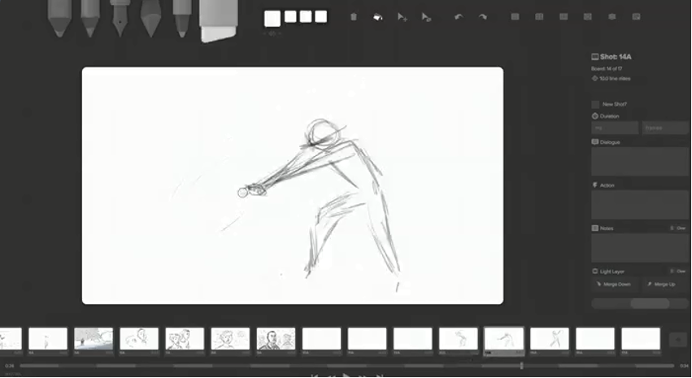

Project Description
Overview
Our team’s project proposition is to plan, design, develop, test and release a fully working 2D side scrolling
platform video game. The team members will be split into separate workloads defined by our timeframes Gantt chart and
design a character that can move, jump and fight through enemies. Once the user has made their way across two well
designed levels without dying more than 3 times, the user’s character or ‘hero’ will engage a boss level and will be
forced into a boss fight. Upon completion of these 3 levels the game will congratulate the user and return to the main
menu prompting the user to play again.
There will be simple game mechanics that our team will have to understand and develop and will do so using the Unity game
development program and the C# programming language. Our team will use a number of development and communication tools
along the way to completing the video game and the effective use of these tools such as level design, character design,
music composition, game engine tools, time management tools and communicative tools will ensure a professionally polished
product that we will all be greatly proud of.
Our team has been playing video games since our childhoods and all of us have fond memories of experiences with varying
games on varying consoles and systems. Due to our group being an older student demographic the generation of games that
we played when we were younger were much older and seemed more engaging, more difficult and much more rewarding in
comparison to today’s generation of video games. This has created great inspiration and motivation to design and develop
and hopefully one day play an old-school game of our own, reminiscent of the “golden days” of video gaming.
While only some of us would continue to further this development in the IT field, the thought of being able to show an
accomplishment such as this to an employer would give all of us a huge sense of value and self-worth, let alone showcase
our ability to work as a team, develop projects within strict timeframes and learn new skills and technologies while doing
so. This above all was enough for us as a group to agree on the video game project and begin planning with great
enthusiasm.
The video gaming industry is an unfathomably large and thriving industry and there are countless gaming products available
and in development. The product we aim to make would be only built for PC due to time constraints however there are thousand
if not tens of thousands of games in the PC market. Not all of these games would be a competitor as our main focus when
comparing other games would be to ensure they are in the same genre and playstyle as our planned video game. Even after
restricting our parameters within this huge industry there are still a number of gaming giants within our genre and style
that we will use not only as motivation and inspiration but as a comparison as to what we wish to and do not wish to achieve
with our own product.
The main differences that our game will have from the others will be its simplicity yet rewarding playstyle. Many games have
long winded story lines that while they may give the user value for money, they become quite repetitive. Our goal with developing
this product is to get the basics right and create a simple yet rewarding game and that alone will separate ourselves from the
majority of video games being release today. One last comparison is the discovery of the rise of microtransactions and pay-to-win
game stores that have emerged over the last decade which will net developers quick and easy money for unfinished and incomplete
products but will, over time, ruin the trust that the users have for the video game industry. Concerning features like these, our
team have decided not to ever travel down that path and will hopefully inspire others to do so too.
Aims
Our team has a small number of goals during the development of this project and each one of these goals will
directly correspond to completing our main aim of achieving a professionally built, working and bug-free 2D side-scrolling
platform game for PC within the 15-week time period. As a group of green yet excited programmers, we aim to work as a team to
perfect our programming skills, communications skills and understanding of all the tools associated with the development
of a video game.
One of our team's primary goals is to successfully build a game with a minimum of two working levels and a working boss
battle level. This could have been extended to much more than just three levels in total however the limitations of the
project would not allow the development of any extra content such as this. Keeping the goal as simple as possible is vital
in ensuring a professionally and competent product is successfully completed within the strict constraints of the
project.
Another important goal that our team will need to accomplish in order to successfully complete this project is to continue
to gain and improve our programming skills that we've learnt so far during our time in this IT course. While we have been
studying Introduction to Information Technology, our team has also been studying Introduction to Programming, which has
taught us invaluable or priceless programming skills and techniques. While we have only been learning the Java language,
the team has learned crucial core programming concepts and fundamentals that are used across all programming languages.
Continued study and understanding of the Java language and the learning of a new language in C# for the required code in
the Unity game development program will allow our team to achieve our main aim of the project.
A similar goal to the one above is continue to gain and improve our ability to master the use of programming, design and
communication tools and technologies associated with the construction of a video game. While learning the programming
languages Java and C# are crucial, the understanding and skills relating to the tools used in creating and developing the
code are just as vital. Our team will have to learn and master the Unity 2D engine in order to complete the development of
the video game and continue to use other required communication tools such as Discord to share ideas, constructive criticism,
timeframes and completion checklists.
Finally, our group's last but most important goal is to work as a team during the life of the video game's development.
Numerous processes will be put into place such as communicative tools and timeframe utilities such as Gantt charts and
completion checklists in order to effectively make use of our team's unique and dynamic skillsets. Making full use of
converting these individual skills into a hive-like-mind will greatly increase our ability to complete a well-polished
and engaging video game within the allotted timeframe.
Plans & Progress
At the beginning of the project it was suggested a cloud-based network for chemists to deter doctor shopping
"for drug dependant people" was put forward. This in itself would be a project of mass proportion; not only combining hardware,
software, government legislation and teams of people, but also the ethical stance that some groups may take, would need to be
overcome. The project, code named "dependency cork" although excellent in theory would require government legislation and
considering the speed of which our government works, the length of time just to have the project commissioned would be of a
considerable wait time. The outcome although would be beneficial to the community as a whole, the feasibility of such a
project on such as mass scale would not be a project that could be undertaken in a short time. We would hazard a guess at a
minimum of five to ten years to have this project, planned, tested, installed and legislated before it was commissioned for
use within the public. Hence, as a group we discussed changing our project to a venture that had a more realistic time frame
and outcome being a game the whole family can play. The game would be a platform game with 2 levels,
enemies, and a final stage where you challenge the Boss. This project had a more realist timeframe and outcome, which as
a team of four, could actually produce something that was actually accomplishable.
Our team consisted of 6 and ultimately still unknown to us it was reduced to four as two of our team members left the course
without withdrawing. Thus, MR GT was born consisting of a good cross section of people as per our personality profiles, giving
us a great combination of people who could work together with different skill sets, but also could express their opinions when
needed.
MATTHEW – An Architect, being an imaginative strategic thinker.
ROB – A Logician, being practical and fact minded.
GAVIN – A Consul, which has characteristics of an extraordinarily caring, social and popular person.
TABITHA – A Mediator, who is poetic, kind and altruistic.
The team in the beginning was a bit scattered and lacked direction as we needed a team leader, whereby Rob was appointed, and
from this point forward our objective started to take place. We combined our individual web pages and produced an amazing project
document and team website for our second project. We also had difficulty with some people having external commitments in their
personal lives taking precedence over the project moving forward. Turning in work quite late, we discussed this as a team at
length using our communication tool, Discord, and decided on using a Gantt chart to ensure all work was completed in a timely
fashion. Both the communication tool and Gantt chart have been successful in their purposes and will continue to be used for
the remainder of the project(s).
Discussions were held between the group, firstly to determine the best communication platform and it was agreed that we used
Discord as our primary tool, then as to the tools that would be required for the production of our project keeping within the
required timeframe defined by the Gantt charts. These tools and technologies include not only Discord and Gantt charts, but
also GitHub, Java + Eclipse, Unity, Chiptune, GIMP and a C# IDE such as Eclipse aCute.
"Discord is a proprietary freeware VoIP application and digital distribution platform - designed initially for the video gaming
community - that specializes in text, image, video and audio communication between users in a chat channel. Discord runs on Windows,
macOS, Android, iOS, Linux, and in web browsers." - Discordapp.com
"A Gantt chart is a type of bar chart that illustrates a project schedule. This chart lists the tasks to be performed on the
vertical axis, and time intervals on the horizontal axis. The width of the horizontal bars in the graph shows the duration of
each activity." - Wikipedia.org

"GitHub is an American company that provides hosting for software development version control using Git. It is a subsidiary of Microsoft,
which acquired the company in 2018 for $7.5 billion" - Github.com
"Java is a general-purpose programming language that is class-based, object-oriented (although not a pure object-oriented language,
as it contains primitive types), and designed to have as few implementation dependencies as possible. It is intended to let application
developers write once, run anywhere (WORA), meaning that compiled Java code can run on all platforms that support Java without the need
for recompilation. Java applications are typically compiled to bytecode that can run on any Java virtual machine (JVM) regardless of
the underlying computer architecture. The syntax of Java is similar to C and C++, but it has fewer low-level facilities than either of
them. As of 2019, Java was one of the most popular programming languages in use according to GitHub, particularly for client-server web
applications, with a reported 9 million developers." - Wikipedia.org
"Unity is a cross-platform game engine developed by Unity Technologies, first announced and released in June 2005 at Apple Inc.'s
Worldwide Developers Conference as a Mac OS X-exclusive game engine. As of 2018, the engine had been extended to support more than
25 platforms. The engine can be used to create three-dimensional, two-dimensional, virtual reality, and augmented reality games, as
well as simulations and other experiences. The engine has been adopted by industries outside video gaming, such as film, automotive,
architecture, engineering and construction." – Unity.com
"Chiptune, also known as chip music or 8-bit music, is a style of synthesized electronic music made using the programmable sound
generator (PSG) sound chips in vintage arcade machines, computers and video game consoles. The term is commonly used to refer to
tracker format music which intentionally sounds similar to older PSG-created music (this is the original meaning of the term),
as well as music that combines PSG sounds with modern musical styles. It has been described as "an interpretation of many genres"
since any existing song can be arranged in a chiptune style defined more by choice of instrument and timbre than specific style
elements." - Wikipedia.org
"GIMP (GNU Image Manipulation Program) is a free and open-source raster graphics editor used for image retouching and editing,
free-form drawing, converting between different image formats, and more specialized tasks. GIMP is released under GPLv3+ licenses
and is available for Linux, macOS, and Microsoft Windows." - Wikipedia.org
For the C# aspect of our game we will get a C# IDE (integrated development environment) of our choosing, we can use Eclipse
aCute, Project Rider, Scriptcs or Visual Studio.
"An integrated development environment (IDE) is a software application that provides comprehensive facilities to computer programmers
for software development. An IDE normally consists of at least a source code editor, build automation tools, and a debugger.
Some IDEs contain the necessary compiler, interpreter, or both." - Wikipedia.org
The project in itself would require a team of professionals with a knowledge and understanding of all IT aspects in delivering a product
that is not only flawless in its operation but is also entertaining and visually appealing to its target base. The following group would
ultimately need to be involved. Video Game Creative Directors, Lead Artist, Lead Programmer, Lead Level Designer and Video Game Tester whose
roles are outlined in the ROLES section of this document.
The planned deliverable would not only be entertaining but something this team would be proud to publish. At this point in time the scope
of the project was the main focus as until this was completed thoroughly a complete understanding of the game and its build requirements
would not be totally understood by all involved. Therefore, a focus was placed on this section. The beginning of the project started with
all involved with the delegation of jobs to individuals using Google docs, which was then moved into a Gantt chart giving time frames for
individuals and group meetings so as group members kept to allocated timeframes.
 From this point forward project completion fell into place quite nicely with members completing their tasks in a timely fashion. The first six
weeks of the project were mainly planning stages whereby team members put forward ideas and theories on how to better enhance our project and
streamline the completion of all tasks involved.
From this point forward project completion fell into place quite nicely with members completing their tasks in a timely fashion. The first six
weeks of the project were mainly planning stages whereby team members put forward ideas and theories on how to better enhance our project and
streamline the completion of all tasks involved.
 The website was built in assignment 2 and then the project was discussed at length between the group members and the massive scope submitted
would have caused an inability to finish any submission at all, therefore as can be seen we have decided on changing to a project that is manageable
in the timeframe allotted.
The website was built in assignment 2 and then the project was discussed at length between the group members and the massive scope submitted
would have caused an inability to finish any submission at all, therefore as can be seen we have decided on changing to a project that is manageable
in the timeframe allotted.
The aim of the project was re-written, as the project has changed from ethical to entertainment, therefore so has some of the jobs required. The
communication stayed the same as this was working perfectly, with all now on board with Discord. Complete with sections so as to be able to comment
on if you required any assistance in your field.
At this point in time all sections have been completed in terms of planning; now the real fun begins with actual programming of the game, along
with testing to ensure the program is bug free. The next 9-10 weeks will be comprised of using hired IT professionals and will include a lead artist,
lead programmer, lead level designer and a tester. All of our team will act as testers as well to ensure a bug free product.
VIDEO GAME CREATIVE DIRECTORS
Once the team of IT professionals are selected, our group will become the acting board of creative directors for the video game. We will be
responsible for maintaining the vision and scope we have set in this document and directing the IT team to meet those objectives.
LEAD ARTIST

During week 8 the lead artist will begin the art style of the game including all levels, characters and boss. These will be produced on story
boards to represent the vision proposed by the creative directors. The software used for creating the story boards is a free download called
STORYBOARDER located at https://wonderunit.com/storyboarder/
"Storyboarder makes it easy to visualize a story as fast you can draw stick figures. Quickly draw to test if a story idea works. Create and
show animatics to others. Express your story idea without making a movie." - Wonderunit.com
LEAD PROGRAMMER
 • Character movement and attack coding Wk9 & 10
• Character movement and attack coding Wk9 & 10
• Enemy movement and attack coding Wk11 & 12
• Boss attack coding Wk13 & 14
Tools used may include http://www.piskelapp.com/
"Piskel is a free online editor for animated sprites & pixel art" - Piskelapp.com
LEAD LEVEL DESIGNER
• Character design including movement, defence and attack. Wk8 – Wk11
• Level 1, 2 and BOSS level design wk8 – wk14
Using Chiptune an 8-bit music track will produced to coincide with all aspects of the game suck as level background music, movement and attack
modes along with menu background tracks. There is also an online library of 8-bit tracks for free download which may also be utilised located
at http://www.chiptune.com
• Enemy character design wk9 - wk10
• Enemy movement and attack design wk11 - wk12
• Boss attack design wk13 - wk14
"Video game design is the process of designing the content and rules of a video game in the pre-production stage and designing the game play,
environment, storyline, and characters in the production stage. The designer of a game is very much like the director of a film; the designer is
the visionary of the game and controls the artistic and technical elements of the game in fulfilment of their vision. Video game design requires
artistic and technical competence as well as writing skills. As the industry has aged and embraced alternative production methodologies such as
agile, the role of a principal game designer has begun to separate - some studios emphasising the auteur model while others emphasising a more
team-oriented model. Within the video game industry, video game design is usually just referred to as "game design", which is a more general
term elsewhere." - Wikipedia.org
VIDEO GAME TESTER
• Testing from Wk10 onwards.
• Reporting bugs and exploits to the lead programmer and to the board of creative directors.
"Video game testers are people who work for videogame companies with the task of thoroughly testing games to make sure they are free of bugs,
glitches and other problems. The job of a video game tester is not to actually play the game, but to break the game." - geteducated.com
Roles
Firstly our team will have a roadmap of what needs to be done. As our team is small our roles may change
depending on what is in store for us that week. Our team is also versitile and can help improve different parts of the game
however some roles can be implemented such as a Client Programmer/Developer, Designer & Artist. Whoever is stronger in C#
& Unity would be under the role Lead Programmer/Developer, others who can help in this section would follow under the Lead as just
a developer.
The Designer and Artist would work together to create the levels needed and environment in each level.
Nothing needs to be set in stone for our team as we can all work on certain aspects, we believe that communication during
all parts is the key to the success in the development of the game.
Rob has studied C++ which is very similar to C# therefore he would be our Lead Developer, Tabitha would be both in Developing and
Level creation/Design, Matt and Gavin would both be in Design and Artists. The roles aren't set in stone as our team can benefit
from everyone being apart of different areas. However once successful, our team would become a board of Creative Directors and look
to hire seasoned professionals in the roles of, Lead Programmer, Lead Artist, Lead Level Design & a tester. We also as the board
would be testing the game.
Scope & Limits
With the planning of any major project, defining the scope and its limitations is one of the most important tasks
involved in the process. This game development project is no different and will detail its deliverables and also its
limitations. Following this well-defined scope with the utmost accuracy will ensure our group delivers a timely and
professional product.
Firstly, the game will be developed through the Unity game development program to produce a 2-dimensional side scrolling
platform game and will contain 2 levels and a boss level for a total of 3 levels. The game will be developed exclusively
for PC and not for consoles purely to save development time. The game will have some 8-bit music
reminiscent of the old-school era of computer games and will give the user control of a playable character or hero that
can navigate the 3 levels. The character will be required to move through these levels using very basic movement commands
such as jumping and moving from left to right. These first 2 levels will contain obstacles for the character to avoid,
manoeuvre around and jump over such as changing ground, dangerous objects or areas such as deadly spikes or empty spaces
representing bottomless pits. The character will also be required to fight monsters or enemies and if the character moves
within a certain range of the enemies they will move towards the character and attack them, requiring the user to either
evade the enemy or attack them first.
To be true to the hardcore nature of the older video games the character or hero will not have a hp bar so if the character
is hit by the enemy the character will instantly die, lose one of the 3 allocated lives and then respawn on the side of the
screen, being immune for 10 seconds. If the character dies 3 times then it will be game over and the player will have to
start the game from the beginning. Once the user navigates the character through the first 2 levels of the game, they will
arrive at the final level: the boss battle. The boss will be a large monster or creature and will use a ranged attack that
the hero will be required to avoid. While dodging and evading the bosses ranged attacks the user will have small time
window to move closer and land a killing blow. Once the boss has been defeated the game will end congratulating the player
for beating the game, displaying the credits and then asking if the player would like to play again.
There are also a number of limitations that have played significant factors in defining the scope of the project. These
limitations can be primarily summed up into 2 categories, time and skill. The time limits of this project are especially
tight as we have only been given 15 weeks to complete the project. This means that the project has been drastically limited
in terms of game size, scale and artist detail. The other major limitation is our groups programming skill and game
development knowledge and the lack of that such skill also plays a crucial role in determining the depth of the game and
amount of overall content in the game.
Due to the limits mentioned above the developed game will not include some features that would normally be included in video
games such as this one. Multiple characters, additional lengthy levels and boss fights, key items, puzzles and an engaging
story line have all been removed from the project plan to enable a quick and time friendly project. Obviously good graphical
detail, advanced character controls and advanced enemy attack patterns will not be included either for the very same reasons.
Using these constraints as a platform from which to develop the game, our group will be able to deliver a professionally competent
project within the specified timeframe.
Tools & Technologies
Our team will need to have certain programs to be able to develop our project and our computers/laptops will need to
have the hardware to successfully run these programs without fail.
One of the programs used would be Unity, as long as we aren't making more than $100k in annual gross revenues we can get Unity for
free. It however doesn't come with support and training. Unity is an extensive allows us to create an environment in which each level
takes place as well as create our sprites. If our team wanted to use something out of Unity we would use GIMP and Adobe Photoshop
to create assests which would be then imported into Unity. Unity also has assest packs which are available for purchase.
For C# aspect of our game we will get a C# IDE (integrated development environment) of our choosing, we can use Eclipse aCute,
Project Rider, Scriptcs or Visual Studio.
Our team will also need programs such as Excel for time management, which will help in keeping a team which isn't located near each other
on the same page as well as working together on the progress of what needs to be done and what has been done. With writing similar to GitHubs
commits, we can track what has been done and what needs tweaking. For communication, our team will be using Discord among other things as we
have found it the most beneficial and easy way to communicate with each other. Our team will also use Discord to hold meetings.
Testing
The testing process for our game will use 2 rounds of in-house testing through the coding process, followed by beta testing
with a small group of volunteer users, including the development team themselves. The in-house testing will be conducted by team members
using and playing the game from sign up through to actual game play, in order to compare the built components of the game with the details
in the scope to make sure the game is being built as planned. This process will also check for bugs in the game, so they can be fixed
before deployment.
For the beta testing, we will gather a small group of volunteers (10 - 30) to test the game on their own PC’s. These volunteers will
be gathered from social media requests, and through gaming chats of any team members that already play games. The team will gather a
range of data from this process, including the hardware and software used, internet connection type, and operating system version to
help diagnose potential problems. The aim of this testing is to find and fix any bugs, and also to gather feedback on any suggested
changes to the game.
Timeframe
Risks
The risks that could affect the development of this game include the tools used, compatibility with user equipment, and the
potential for long term revenue to support further development.
When deciding which tools to use its important to consider the following potential risks. The languages and IDE chosen may not offer
the features required to build the kind of game that was planned, this is where testing throughout the build process is
also valuable, as it is easier and cheaper to change the tools used earlier on. There is also a risk that graphics,
design elements, music, and any other external component formats may not integrate with the coding language and platform.
Both of these risks could be reduced by cross checking the scope with the selected tools before beginning the build process.
The hardware and software combinations end users own may have integration incompatibilities which could lead to unforeseen problems
involving game inputs for character movement, and audio/video output due to different types of monitors, video cards, and
device drivers. The beta testing (and records from this) is integral to minimising this risk by having the game tested on
a wide variety of computers.
Long term revenue may also be affected due to the simplicity of the game, which may limit the number of users willing to pay for it.
This can be addressed with further modifications in future releases.
Group Processes & Communications
Throughout the semester our project team has been in contact with each other using a number of communication methods.
The quantity and quality of the communications have been consistent and professional at all times. While there have been some
quiet periods such as a few days to a week long period straight after handing in a previous assignment or project, our team
completely understands and appreciates the ongoing and changing lifestyles and workloads that we all have. On average our team
has been in regular conversation more than 3-4 times a week using communication methods and technologies or tools such as RMIT
Canvas, Discord, Email and even through mobile phone communications and will continue to do so during the completion of the
remainder of our team's projects. Our team's aim is to continue these communicative practices for the remainder of the semester
until all the remaining projects have been completed with the utmost professionalism and competency. While frustrations do arise
from team members going missing from time to time due to unforeseen reasons, it has been and will continue to be only for a small
day to two-day period. In order to counter these unforeseen problems and similar problems that occurred during our team's last
project, we have all agreed to organise ourselves better for this project and start working on the project at our earliest
conveniences. This will drastically reduce the amount of anxieties and frustrations known to accompany missing team members and
contribute greatly to completing and handing in a polished and professional report.